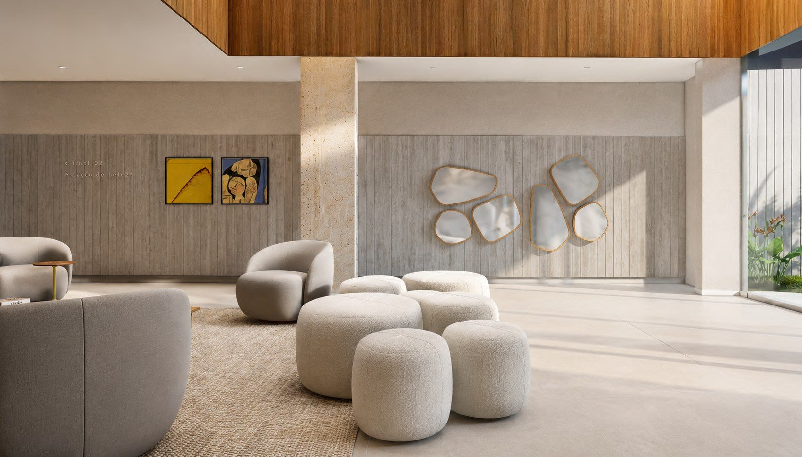
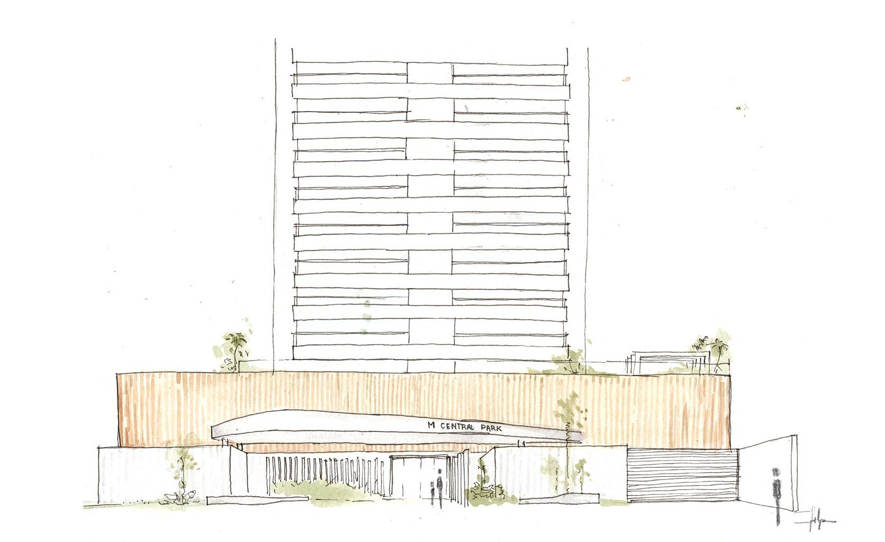
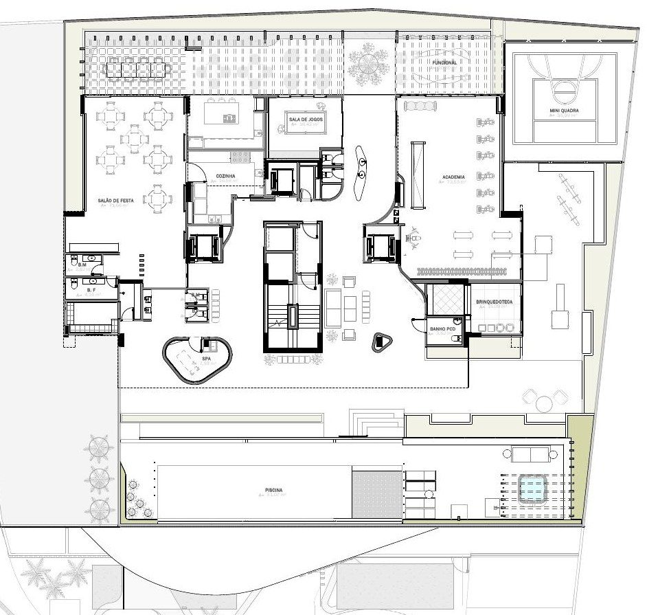
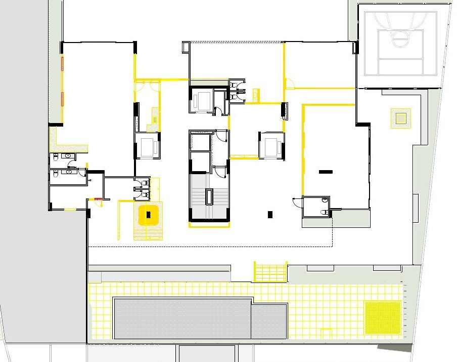
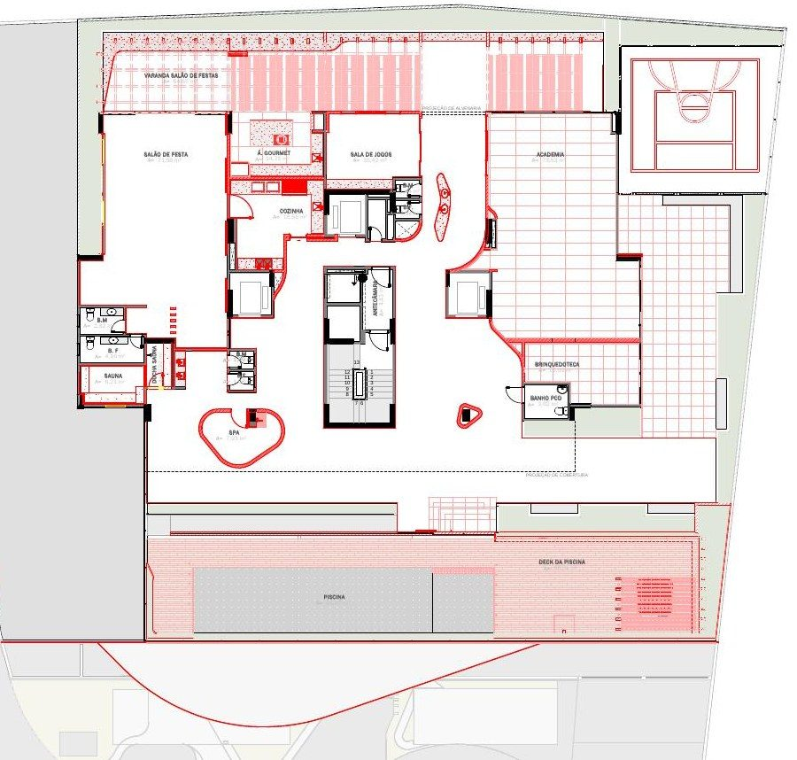

01
MCentral Park

O projeto traz como premissa a reforma total das áreas de lazer e convivência do condomínio vertical MCentral Park, em Goiânia, assim como a adequação de fachada tanto na base do edifício quanto nas fachadas dos pavimentos-tipo. A reconfiguração dos ambientes existentes e das circulações, além da criação de novos ambientes, propõe trazer uso a espaços subutilizados, novos usos e maior qualidade àqueles mantidos.
Participei desde os partidos formais iniciais, passando por projetos mais técnicos como o luminotécnico proposto, até a modelagem e concepção dos interiores.
“As formas sinuosas em planta e nos objetos de design vêm para trazer a escala humana e natural na requalificação de uma preexistência reta e pasteurizada.”


Processo
Do croqui ao executivo.


